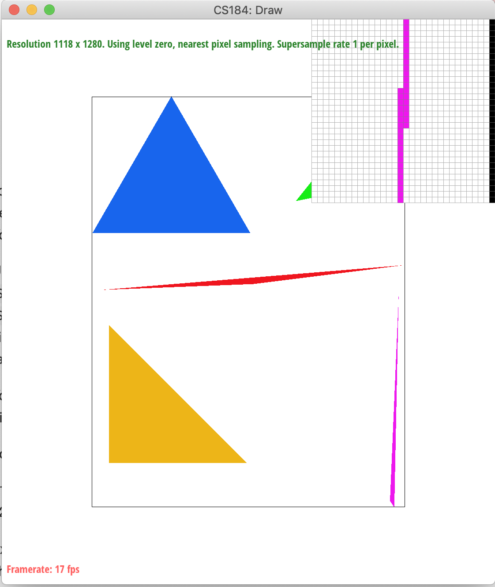

Overview
This project has two sections — “Rasterization” and “Sampling”. In the first section, I rasterize triangles and use supersampling method to do antialiasing. Then I implement graph transforms. In the second section, I use barycentric coordinate to get a smooth color change in a triangle. Then I did texture mapping using mipmaps and “Nearest” and “Bilinear” method.
Section I: Rasterization
Part 1: Rasterizing single-color triangles
1.1
To rasterize triangles, since I get the coordinates of a triangle and the triangle color, I need to first get the bounding box of the triangle and then check each coordinates in the bounding box whether it’s in the triangle. If so, I need to paint the pixel in that coordinate to the color I get, using SampleBuffer::fill_pixel().
Then let’s talk about the function for judging if a point is in the triangle. After trying a few methods, it turns out that the method in the lecture performs the best even though it’s not fast, which is to see going along the triangle, if the point is always at the same side, the point is sure to be in the triangle.
1.2
My algorithm is exactly checking each sample within the bounding box of the triangle, so it’s no worse than that.
1.3
|
|
Part 2: Antialiasing triangles
2.1
In DrawRend::rasterize_triangle, I divide a pixel into sample_rate ones and get the center coordinates of each sub-pixel. Then I check if they are in the triangle using the same method in part one. If so, paint the sub-pixel into the color I get. Then in each pixel, I use SampleBuffer::get_pixel_color to get the average rgb value among each sub-pixel and give the value to the whole pixel.
The reason why supersampling is useful is that it takes much more samples than it supposed to, so we have more detailed information about the graph. And by efficiently using the information, we get better result.
The modifications I made to the pipeline is that before painting a whole pixel, I divide the pixel into many sub-pixels and do the in-triangle checking and paint them individually, then I get a average color of them to paint the whole pixel.
To antialias triangles, I take the average color of sub-pixels to paint the whole pixel, which smooth the edge of a graph.
2.2
|

|
|
|
The reason why these results are observed is that the pink triangle is so thin that only part of a pixel is in the triangle. As a result, checking the center of a whole pixel is not a accurate policy. However, I divide the pixel into sub-pixels and take the average color, so I can get a preciser result.
Part 3: Transforms

|
Section II: Sampling
Part 4: Barycentric coordinates
4.1
From my perspective, barycentric coordinate is the relative position of a point in a triangle. In particular, when I have a point’s coordinate which is in a triangle, along with the 3 vertexs’ coordinates of the triangle, I can use the formula in the lecture to calculate the barycentric coordinate of the point in the triangle.
If there is a value in each vertex of a triangle (such as color), with a barycentric coordinate, I can calculate a value which is proper for the point in the triangle relative to three vertexs of the triangle.
The picture down below is a svg file that plots a single triangle with one red, one green, and one black vertex, which produce a smoothly blended color triangle.
|
|
4.2
|
|
Part 5: "Pixel sampling" for texture mapping
5.1
Pixel sampling aims to get the pixel’s color facing the problem that color information is only stored at integer coordinates.
To implement texture mapping, I have a canvas whose coordinates are described by (x,y), and a texture picture whose coordinates are described by (u,v), noticing that u,v are in [0,1], because they describe relative position. Firstly, I convert the (x,y) to (u,v) using barycentric coordinate. In particular, according to (x,y) and 3 vertexs’ coordinates, I get (x,y)’s barycentric coordinate (alpha, beta, gamma). Then I use it along with 3 vertexs’ coordinates in texture picture to calculate the point’s (u,v) coordinate.
Secondly, once I have the point’s (u*width,v*height) coordinate, I can get the point’s texture color now. However, the coordinate might not be an integer, and we only have color information of texture picture at integer coordinates. There are 2 different pixel sampling methods to handle this problem.
Nearest: Round the (u*width,v*height) coordinate to its nearest integer coordinate, and use its color.
Bilinear: Get the 4 integer coordinate around the (u*width,v*height) coordinate, and the 4 color value around the point. Then we apply the method in the lecture to lerp 3 times to get a more accurate color for the point.
5.2
|
|
|
|
|
|
5.3
Comments: Bilinear method did a better job on anti-aliasing
The high frequency part of a picture can cause big difference using these two methods, because the high frequency part of a picture may have different color between near coordinates, which would cause “nearest” method to have some mistake and cause aliasing effect.
Part 6: "Level sampling" with mipmaps for texture mapping
6.1
Mipmap method offer different size texture picture stored for different level. The higher the level, the smaller the texture picture. Different size texture pic is stored for different need. For example, in a picture, the closer an object is, the bigger texture is required.
Here I calculate (du/dx,dv/dx) and (du/dy,dv/dy) and use the method mentioned in the lecture to get a proper level. In particular, you can see my implementation of Texture::get_level
Since we might not get an integer value, we need to round it to one, by using “Nearest” method or “Bilinear” method. In particular, “Nearest” method is to get a nearest integer level of course, and “Bilinear” method is to get the color from both the smaller level and the bigger level, then we lerp it to a proper color.
6.2
In general, Bilinear Method offers a better antialiasing proformance, but does badly at speed and memory using. On the contrary, Nearest Method offers a worse antialiasing proformance, but does well at speed and memory using.
6.3

|
|
|
|
|